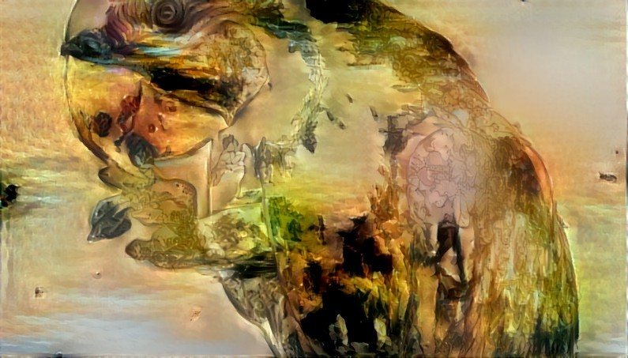

Durable identity
Stable engine-owned IDs let names, aliases, tags, and source-local tracks change without silently changing the animal.
An efficient C++ engine for naming tracked animals and estimating the state of individuals and colonies from heterogeneous observations.

The engine
A tag can disappear. A camera can lose a track. A name can change. The engine keeps those temporary clues separate from the durable entity they may describe, preserving evidence and uncertainty as it updates its estimate.
Stable engine-owned IDs let names, aliases, tags, and source-local tracks change without silently changing the animal.
A compact observation model is designed to accept future camera, acoustic, collar, and field sources without coupling the core to them.
Large animals can be represented individually; collectives such as bee hives or ant colonies can be tracked as entities in their own right.